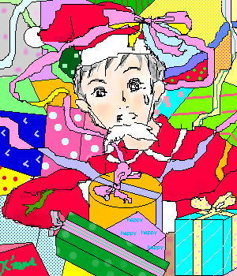

September.2002
職業シリーズ、これも職業、見習いサンタ熊ちゃんです。
プレゼントにリボンを結ぶのですが上手くいきません。
しまいには、自分にリボンをかけそうになる始末…。
なんて、ちょっと妄想モードで描かせて頂きました。
これは翠蘭さんからのキリ番ゲットのリクエスト（サンタの熊ちゃん）だったのですが、
こんなにステキな設定を希望して頂き、かなり楽しめました(笑)。ありがとうございます。
いつもは水彩で色付けするのですが、初めて鉛筆の塗りつぶしにチャレンジしました。